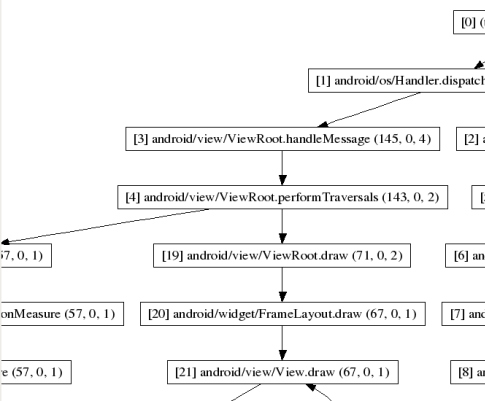

Traceview is a graphical viewer for execution logs that you create by using the Debug class to log tracing information in your code. Traceview can help you debug
your application and profile its performance.
Traceview Layout
When you have a trace log file (generated by adding tracing code to your application or by DDMS), you can have Traceview load the log files and display their data in a window visualizes your application in two panels:
- A timeline panel -- describes when each thread and method started and stopped
- A profile panel -- provides a summary of what happened inside a method
The sections below provide addition information about the traceview output panes.
Timeline Panel
The image below shows a close up of the timeline panel. Each thread’s execution is shown
in its own row, with time increasing to the right. Each method is shown in another color (colors
are reused in a round-robin fashion starting with the methods that have the most inclusive time).
The thin lines underneath the first row show the extent (entry to exit) of all the calls to the
selected method. The method in this case is LoadListener.nativeFinished() and it was selected in
the profile view.
Figure 1. The Traceview Timeline Panel
Profile Panel
Figure 2 shows the profile pane, a summary of all the time spent
in a method. The table shows both the inclusive and exclusive times (as well as the percentage of
the total time). Exclusive time is the time spent in the method. Inclusive time is the time spent
in the method plus the time spent in any called functions. We refer to calling methods as
"parents" and called methods as "children." When a method is selected (by clicking on it), it
expands to show the parents and children. Parents are shown with a purple background and children
with a yellow background. The last column in the table shows the number of calls to this method
plus the number of recursive calls. The last column shows the number of calls out of the total
number of calls made to that method. In this view, we can see that there were 14 calls to
LoadListener.nativeFinished(); looking at the timeline panel shows that one of those calls took
an unusually long time.
Figure 2. The Traceview Profile Panel
Creating Trace Files
To use Traceview, you need to generate log files containing the trace information you want to analyze.
There are two ways to generate trace logs:
- Include the
Debugclass in your code and call its methods to start and stop logging of trace information to disk. This method is very precise because you can specify in your code exactly where to start and stop logging trace data. - Use the method profiling feature of DDMS to generate trace logs. This method is less precise since you do not modify code, but rather specify when to start and stop logging with a DDMS. Although you have less control on exactly where the data is logged, this method is useful if you don't have access to the application's code, or if you do not need the precision of the first method.
Before you start generating trace logs, be aware of the following restrictions:
- If you are using the
Debugclass, your device or emulator must have an SD card and your application must have permission to write to the SD card. - If you are using DDMS, Android 2.1 and earlier devices must have an SD card present and your application must have permission to write to the SD card.
- If you are using DDMS, Android 2.2 and later devices do not need an SD card. The trace log files are streamed directly to your development machine.
This document focuses on using the Debug class to generate trace data. For more information on using DDMS
to generate trace data, see Using the Dalvik Debug Monitor Server.
To create the trace files, include the Debug class and call one of the
startMethodTracing() methods. In the call, you
specify a base name for the trace files that the system generates. To stop tracing, call stopMethodTracing(). These methods start and stop method
tracing across the entire virtual machine. For example, you could call
startMethodTracing() in
your activity's onCreate() method, and call
stopMethodTracing() in that activity's
onDestroy() method.
// start tracing to "/sdcard/calc.trace"
Debug.startMethodTracing("calc");
// ...
// stop tracing
Debug.stopMethodTracing();
When your application calls startMethodTracing(), the system creates a file called
<trace-base-name>.trace. This contains the binary method trace data and a
mapping table with thread and method names.
The system then begins buffering the generated trace data, until your application calls stopMethodTracing(), at which time it writes the buffered data to the output file. If the system reaches the maximum buffer size before stopMethodTracing() is called, the system stops tracing and sends a notification to the console.
Interpreted code will run more slowly when profiling is enabled. Don't try to generate absolute timings from the profiler results (i.e. "function X takes 2.5 seconds to run"). The times are only useful in relation to other profile output, so you can see if changes have made the code faster or slower.
When using the Android emulator, you must specify an SD card when you create your AVD because the trace files are written to the SD card. Your application must have permission to write to the SD card as well.
Copying Trace Files to a Host Machine
After your application has run and the system has created your trace files
<trace-base-name>.trace on a device or emulator, you must copy those files to
your development computer. You can use adb pull to copy the files. Here's an example
that shows how to copy an example file, calc.trace, from the default location on the emulator to
the /tmp directory on the emulator host machine:
adb pull /sdcard/calc.trace /tmp
Viewing Trace Files in Traceview
To run Traceview and view the trace files, enter traceview
<trace-base-name>. For example, to run Traceview on the example files copied in the
previous section, use:
traceview /tmp/calc
Note: If you are trying to view the trace logs of an application
that is built with ProGuard enabled (release mode build), some method and member names might be obfuscated.
You can use the Proguard mapping.txt file to figure out the original unobfuscated names. For more information
on this file, see the Proguard documentation.
Using dmtracedump
dmtracedump is a tool that gives you an alternate way of generating
graphical call-stack diagrams from trace log files. The tool uses the Graphviz Dot utility to
create the graphical output, so you need to install Graphviz before running dmtracedump.
The dmtracedump tool generates the call stack data as a tree diagram, with each call represented as a node. It shows call flow (from parent node to child nodes) using arrows. The diagram below shows an example of dmtracedump output.
Figure 3. Screenshot of dmtracedump
For each node, dmtracedump shows <ref>
callname (<inc-ms>, <exc-ms>,<numcalls>), where
<ref>-- Call reference number, as used in trace logs<inc-ms>-- Inclusive elapsed time (milliseconds spent in method, including all child methods)<exc-ms>-- Exclusive elapsed time (milliseconds spent in method, not including any child methods)<numcalls>-- Number of calls
The usage for dmtracedump is:
dmtracedump [-ho] [-s sortable] [-d trace-base-name] [-g outfile] <trace-base-name>
The tool then loads trace log data from <trace-base-name>.data and
<trace-base-name>.key. The table below lists the options for dmtracedump.
| Option | Description |
|---|---|
-d <trace-base-name> |
Diff with this trace name |
-g <outfile> |
Generate output to <outfile> |
-h |
Turn on HTML output |
-o |
Dump the trace file instead of profiling |
-d <trace-base-name> |
URL base to the location of the sortable javascript file |
-t <percent> |
Minimum threshold for including child nodes in the graph (child's inclusive time as a percentage of parent inclusive time). If this option is not used, the default threshold is 20%. |
Traceview Known Issues
- Threads
-
Traceview logging does not handle threads well, resulting in these two problems:
- If a thread exits during profiling, the thread name is not emitted;
- The VM reuses thread IDs. If a thread stops and another starts, they may get the same ID.